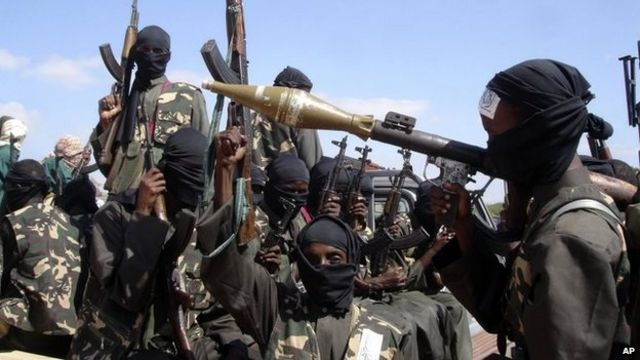
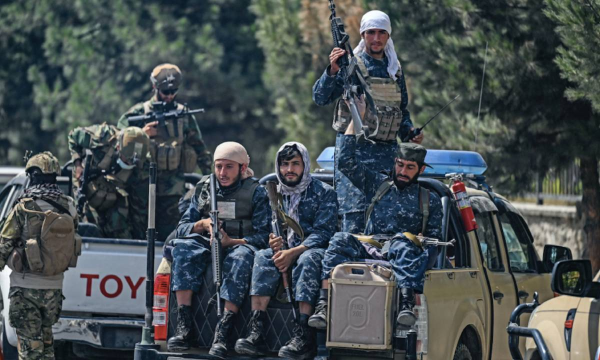

Noticias Cidades
Ultimas notícias do Mundo
Taiwan nega residência a imigrantes de Hong Kong nascidos na China continental
A imposição por Beijing da “lei de segurança nacional” em Hong Kong, em 2020, levou dezenas de milhares de cidadãos do território autogovernado a migrarem para Taiwan, que luta contra o domínio chinês e para ter sua independência reconhecida. Para uma parcela dos candidatos, porém, o processo tem sido mais complicado, vez que Taipé tem frequentemente negado os pedidos de residência de imigrantes nascidos na China continental. As informações são da Radio Free Asia.
Ao menos 40 candidatos de Hong Kong que querem se mudar para Taiwan atualmente enfrentam obstáculos devido ao local de nascimento e à burocracia de imigração da ilha. A rejeição não diminuiu mesmo após Taiwan alterar as regras de imigração em 2020, permitindo que os nascidos na China se inscrevessem junto com residentes de Hong Kong e de Macau.
Um candidato que prefere ser identificado apenas pelo sobrenome, Lee, diz que ele e a mulher fizeram o pedido de imigração de investimento em 2019, com a pretensão de administrar uma loja on-line. Foram rejeitados em outubro de 2021, tendo o local de nascimento como justificativa. “Eles são um governo e precisam seguir as regras. As pessoas estão planejando suas vidas inteiras em torno dessas coisas, e isso é uma grande disrupção”.
Taiwan busca o reconhecimento de sua independência da China
Já uma professora de sobrenome Mak, que seguiu a mesma rota de Lee, foi rejeitada sem qualquer justificativa e agora contesta a legislação taiwanesa. Ela se diz surpresa, pois não esperava enfrentar qualquer obstáculo. “Essa regra é ridícula. Escolhi me mudar para Taiwan porque gosto de lá”, disse. “Sinto que fui acusado de ser espiã, mas sou inocente”.
Essa, aliás, é uma das principais explicações para o governo taiwanês rejeitar cidadãos nascidos na China. Teme que os imigrantes de investimento estejam ligados ao Partido Comunista Chinês (PCC) e ingressem na ilha para espionar em favor do governo continental, algo que já foi registrado anteriormente. Lee nega essa possibilidade e diz que queria sair de Hong Kong justamente porque era infeliz “sendo perseguido pelo PCC“.
“Se você quer encontrar alguém culpado, você deve fornecer provas”, afirmou Mak, que alega viver em Hong Kong há mais de 40, após passar apenas sete ou oito anos na China continental. Ela ainda aponta um furo óbvio na estratégia de Taiwan. “Eles parecem estar dizendo que somos espiões só porque nascemos na China. Mas todo mundo que nasceu em Hong Kong é uma aposta segura?”.
Segundo um funcionário do Ministério do Interior de Taiwan, os imigrantes geralmente são rejeitados por não terem vivido muito tempo em Hong Kong como residentes permanentes, por terem cônjuge da China continental ou porque o plano de investimento não corresponde às atividades comerciais reais. Já o Conselho de Assuntos do Interior (MAC) disse que os candidatos devem receber permissão para imigrar desde que não haja preocupações com a segurança nacional. E que os rejeitados podem considerar a reaplicação.
A consultora de imigração Chang Hsiang-liang mostrou surpresa ao saber que os candidatos nascidos na China continuam sendo recusados. “Muitas pessoas foram afetadas por isso quando ainda estavam revisando a lei [no final de 2020 e início de 2021]. Mas agora talvez possam revisar essas decisões e conceder residência”, disse ela, que também recomendou aos imigrantes recusados que refizessem o processo.
Grupo jihadista divulga vídeo de crianças-soldado executando militares da Nigéria
Um vídeo divulgado na internet pelo ISWAP (Estado Islâmico da África Ocidental) mostra crianças-soldado executando dois homens identificados como militares do exército da Nigéria. As imagens foram originalmente publicadas pelo SITE Intelligence Group, que monitora a atividade jihadista no mundo, com informações posteriormente reproduzidas pela agência Associated Press (AP).
O vídeo, possivelmente gravado na região do Lago Chade, no nordeste da Nigéria, mostra um homem com uniforme militar que diz ser membro das forças especiais nigerianas. Ele é executado com dois tiros na cabeça por um garoto de aproximadamente 12 anos de idade. Depois, outro suposto militar, que alega ter sido capturado em abril de 2021, é morto por um homem mascarado. Também há imagens de crianças-soldado treinando em campo aberto e estudando em salas de aula.
Segundo Rita Katz, diretora executiva do SITE Intelligence Group, o Estado Islâmico (EI), ao qual o ISWAP é vinculado, está “mais desesperado do que nunca para manter seu nome na discussão global, devido ao fato de que não tem mais um ‘califado’ físico fora de bases relativamente pequenas em diferentes países”. Ela faz referência ao fato de o grupo ter sido derrotado em seus dois principais domínios, Iraque e Síria, e atualmente apostar na África para ressurgir.
O vídeo, diz Katz, “demonstra o imenso foco do EI na África” e coloca “os holofotes na Nigéria como uma de suas fortalezas, projetando-se como uma força adaptativa e duradoura para o mundo”.
Tomasz Rolbiecki, analista da empresa de segurança ExTrac, que estuda a situação naquela região, afirma que o vídeo confirma o fato de o ISWAP ter “liberdade suficiente na área do Lago Chade para manter um campo de treinamento pequeno, mas permanente, para uma futura geração de insurgentes”.
O enfraquecimento do EI e, consequentemente, do ISWAP não significa que a facção esteja perto de uma derrota definitiva. “O ISWAP ainda é um grande grupo, com milhares de combatentes, trabalhando em cadeias de suprimentos e capaz de arrecadar centenas de milhares de dólares em impostos”, disse ele. “Mesmo que o exército nigeriano lançasse ofensivas maciças contra o ISWAP, levaria anos para conter totalmente a ameaça que este grupo representa”.
Crianças-soldado
As regiões central e oeste da África notificam o maior número de crianças-soldado do mundo, de acordo com o Unicef (Fundo para a Infância das Nações Unidas). Entre 2005 e 2020, estima-se que mais de 93 mil crianças tenham sido recrutadas e usadas em conflitos. São mais de 21 mil menores recrutados por forças governamentais e grupos armados na região somente entre 2016 e 2021.
Também nesse intervalo de cinco anos, cerca de 2,2 mil crianças foram vítimas de violência sexual, enquanto outras 3,5 mil foram sequestradas. As duas regiões africanas aparecem em segundo lugar entre as que mais registram esses delitos no mundo.
Pelo menos 1,5 mil ataques ocorreram em escolas e hospitais em nações como Burkina Faso, República Centro-Africana, Camarões, Chade, RD Congo, Mali, Mauritânia e Níger. As comunidades sofrem com a violência que foi agravada na pandemia.
Em 2005, a ONU introduziu um sistema que monitora e relata violações graves contra crianças, como recrutamento, sequestro, estupro e ataques a escolas e hospitais. O relatório ressalta que desde o período, uma em cada quatro violações ocorridas em todo o mundo ocorreu na África Ocidental e Central.
Os últimos anos têm sido marcados por um aumento da violência no Sahel, a região semiárida que se estende do norte do Senegal e compreende a Mauritânia, o Mali, o Burquina Fasso, o Níger, a Nigéria, o Chade, o Sudão e a Eritreia.
Afeganistão lidera lista dos países que mais perseguem cristãos no mundo, diz ONG
Mais de 360 milhões de cristãos em todo o mundo sofrem perseguição e discriminação em consequência da fé, apontou relatório anual da ONG Open Doors (Portas Abertas, em tradução literal) divulgado nesta quarta-feira (19). As informações são do jornal Washington Times.
O relatório destacou 50 países onde até 100 milhões de cristãos enfrentam perigo por causa de suas crenças. No topo da lista estão Afeganistão, Nigéria e Índia. A China aparece na 17ª posição.
O país do Oriente Médio, que desde agosto de 2021 é controlado pelo Taleban, encabeça a listagem de nações mais perigosas do mundo para os fiéis que seguem o cristianismo, desbancando a Coreia do Norte da liderança pela primeira vez em 20 anos.
Intolerância religiosa é causadora de mortes e prisões no mundo
De acordo com o presidente da Portas Abertas, David Curry, o desastre humanitário em Cabul trouxe repercussões massivas. “A grande questão dos refugiados desencadeada pela tomada do poder significa que os talibãs tentarão matar aqueles suspeitos de serem cristãos, bem como aqueles de diferentes visões políticas”.
Em outubro, a Comissão de Liberdade Religiosa Internacional dos EUA informou que as condições para as minorias religiosas no Afeganistão “se deterioraram” desde que a organização islâmica assumiu o controle do país.
Em relação ao resto do mundo, segundo Christian Nani, diretor de Portas Abertas Itália, a intolerância atingiu nível recorde.
“Desde que realizamos este relatório, há cerca de 30 anos, este é o nível mais elevado em termos absolutos de perseguição. Um cristão em cada sete no mundo é perseguido. Na África um cristão em cada cinco e na Ásia dois em cada cinco. Estamos assistindo ao crescimento de um fenômeno que diz respeito à vida de comunidades e de indivíduos cristãos, sob vários pontos de vista”, relatou a liderança ao portal Vatican News.
O estudo da Portas Abertas também relatou que 5.898 cristãos foram mortos por sua fé em 2021, número que representa um aumento de 24% em relação a 2020. Cerca de 79% desses assassinatos (4.650) ocorreram na Nigéria. Aproximadamente 11% (620 homicídios) foram no Paquistão.
Na Índia, Curry aponta que as políticas do primeiro-ministro indiano Narendra Modi e seu Partido Bharatiya Janata (BJP), são responsáveis por “uma agenda nacionalista, que criou uma narrativa de que os cristãos são o inimigo e encoraja multidões a atacar os crentes”.
O relatório da ONG trouxe o dado de que 1.310 cristãos foram detidos ilegalmente no país no ano passado “por motivos relacionados à fé”.
Outras notícias do Brasil
-
Chuvas
O que as chuvas deste mês significam para os reservatórios e a conta de luz
-
Seca
Prejuízo com a seca nas lavouras sobe para R$ 25,6 bi e Paraná pede ajuda federal
-
Caminhões cegonha
DAF Caminhões Brasil começa a exportar veículos produzidos em Ponta
-
Fim do rodízio do PR
A Sanepar acertou ao decretar o fim do rodízio no abastecimento de água?